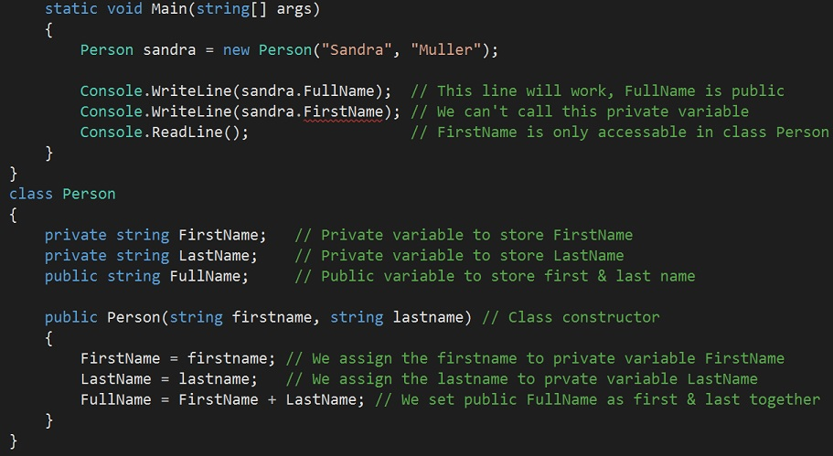

The scope of a variable determines its lifetime and controls its visibility and availability to each of the methods within a program. A variable's scope is always the full extent of the code block it is declared in.
You can create nested variables scopes, for example, a loop within a method within a class provides three levels of nested code blocks and thus equates to three levels of nested scope. if you declare a variable in one if these nested scopes, it will only be visible to the current scope and any scopes nested within it.
You can also scope variables at class-level or method-level. Class-level scope variables are available to any non-static methods within the class. Method-level scope variables are available to all parts of the method code block including nested scopes. Here is an example of a variable declared within a method and then used in an if statement, and then a variable declared within an if statement. The method-level variable is accessable outside of the if statement, whereas the if statement variable is not accessable outside of the if statement.
An access modifier is used to change the scope of a variable or a method. You can set it as public, private, protected and internal.
PRIVATE means that the variable or method is only accessable inside the class it is declared in.
PUBLIC means that the variable or method can be accessed by code outside of the class as well.
PROTECTED means that the variable or method is only accessable inside the class it is declared in and in classes derived from that class.
INTERNAL means that the variable or method is only accessably in the same project its declared in.
So we have discussed a nested variable scope and say we have a variable declared as a public variable inside a class, it will be accessable from outside of that class. Whereas, if we had declared it as private in a class it would no longer be accessable outside of that class. Please see example below.
